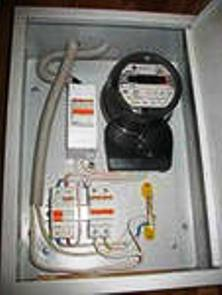

Качественный электромонтаж в Санкт-Петербурге и ленобласти, стаж 12 лет. Частный электрик, недорого и качественно.
Тел. 8 904 642 08 57 Николай.

Как соединять медные и алюминиевые провода?
В данной статье в общих чертах описаны способы, которыми можно выполнять соединение алюминиевых и медных проводов.
Если вы хоть немного знакомы с электричеством, а в частности с электромонтажными работами, то наверняка знаете, что соединение медных и алюминиевых проводов не рекомендуется. К сожалению, многие пренебрегают данной рекомендацией, скручивая между собой провода из алюминия и меди. Любой электрик вам подтвердит, что данная скрутка долго не прослужит, и не важно, где соединение находится – на улице или в помещении.
Но что делать, если возникла ситуация, при которой не обойтись без соединения алюминиевых и медных проводов? В этом случае для соединения пары медь-алюминий можно воспользоваться клеммниками или методом болтовых соединений. Эти два способа рекомендуются потому, что при их применении не происходит прямого контакта между проводами из разных металлов. Давайте рассмотрим их более подробно.
Клеммные соединения.
«Орешки» - старый, надежный, проверенный способ соединения. За внешним видом данный тип клеммных соединений напоминает орех, откуда собственно и произошло название способа. Соединение представляет собой три металлических пластины, между которыми с помощью болтов зажимаются проводники.
Клеммники WAGO. Довольно простое и популярное на сегодняшний день устройство, позволяющее соединять между собой медные и алюминиевые провода. Смазка, которой наполнена внутренность устройства соединения, не позволит проводам окисляться в процессе эксплуатации. Чтобы провести соединение в клеммнике WAGO, необходимо зачистить наждачной бумагой проводники (на 1,5-2 см), а затем завести их в устройство через специальные отверстия. Стоит помнить, что данный способ соединения не рекомендуется к применению в силовых цепях.
Клеммные колодки – еще один тип клеммных соединений, отличающийся своей надежностью. Метод очень простой: зачищенный проводник вставляется в одно отверстие клеммника, после чего зажимается винтом. Аналогичная операция проводится со вторым проводником.
Болтовые соединения.
При соединении алюминиевых и медных проводов данный способ используется довольно часто, поскольку для его выполнения не требуется наличие специальных устройств. Не забывайте, что проводя соединение проводов данным способов, между ними необходимо установить анодированную шайбу.



Сколько будут стоить материалы.
Замена электропроводки в панельном доме.
Расценки на электропроводку квартир.
Сколько стоит замена электропроводки в двухкомнатной квартире?.
Сколько стоит проложить проводку в 3 ком квартире?
Сколько стоит проложить проводку в четырехкомнатной квартире?
Сколько стоит сделать внутреннюю проводку?.